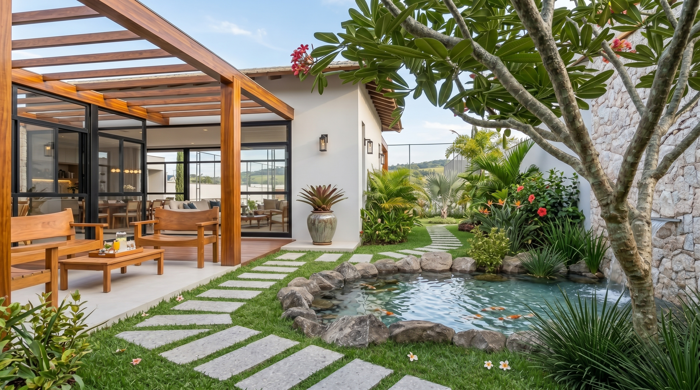
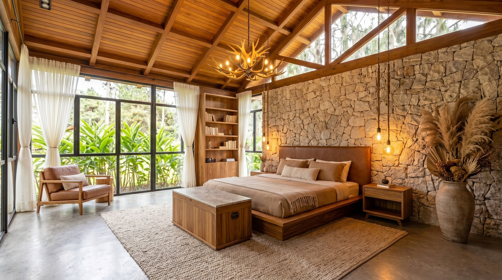
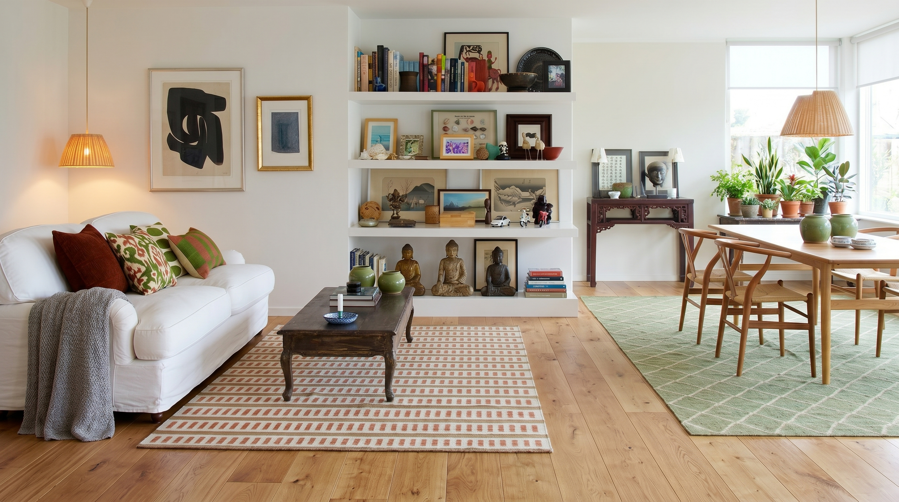

Residencial
Casas e apartamentos planejados para melhorar a rotina, valorizar o imóvel e transformar investimento em conforto, beleza e uso inteligente dos ambientes.

01 - Rotina
O projeto começa pelo jeito que a casa precisa funcionar
O projeto residencial começa mapeando rotina: horários, circulação, armazenamento, privacidade, forma de receber e pequenos hábitos que definem como a casa deve responder.
02 - Planta
Melhor uso da área, da luz e da circulação
A planta precisa trabalhar a favor da vida diária. Reposicionar usos, integrar ambientes e ajustar medidas pode transformar a sensação de amplitude sem depender de excesso.


03 - Dormitórios
Descanso com conforto e intenção
Dormitórios pedem silêncio visual, luz controlada e armazenamento bem resolvido. Cada detalhe ajuda a criar uma rotina de descanso mais leve e organizada.
04 - Convivência
Salas que recebem melhor
Sala de estar, jantar e cozinha precisam conversar. O projeto ajusta proporções, circulação e pontos de apoio para receber bem sem comprometer o uso diário.


05 - Receber
A casa preparada para encontros reais
A mesa pede luz na medida, cadeiras confortáveis, passagem livre e materiais resistentes. Esses detalhes fazem o encontro acontecer com beleza, mas também com praticidade.
Vamos planejar seu lar com mais segurança?
Conte como é o seu espaço hoje, o que precisa melhorar e quais decisões você quer tomar com mais clareza.
Agendar uma conversa